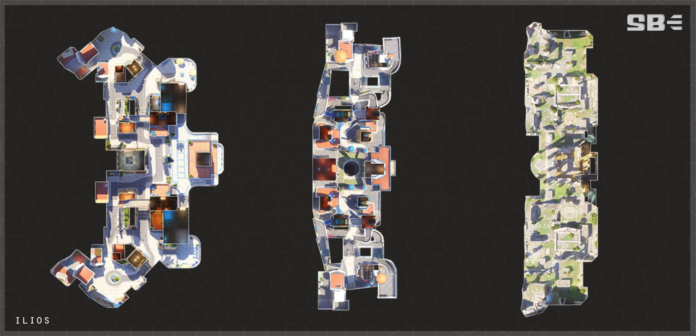

伊利歐斯 Ilios
回首頁
Your browser does not support the audio element.
伊
利歐斯位於希臘的愛琴海，是地中海的一部分。
伊利歐斯位於一個從愛琴海昇起的小島上，是一個明信片般的地中海小鎮， 擁有繁華的海港，蜿蜒的山坡漫步路徑和美麗的景色。對於那些尋找放鬆場 所的人來說，或者是那些有興趣探索散落在島頂的廢墟的人們來說，這裡是 理想的度假勝地。那裡最近出土了許多古代文物和遺物。這些廢墟最近被宣 佈為受國際保護的遺產。然而，利爪組織仍然試圖竊取這些文物。



 回首頁
回首頁